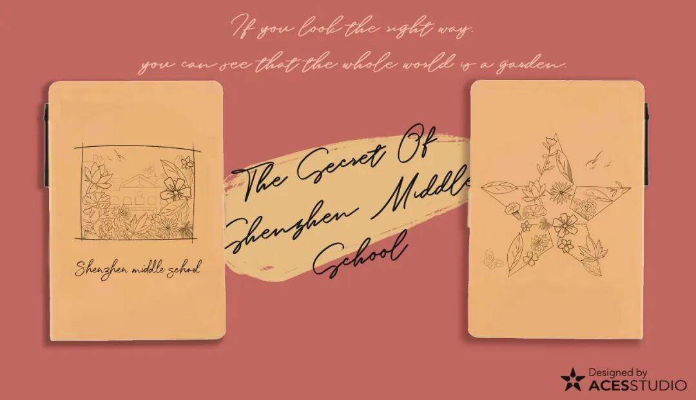

Flourishing Notepad
繁盛
Inspired by The Secret Garden, this notepad used detailed black-ink sketches to suggest a world of abundant growth.
A record of products I designed for Shenzhen Middle School Media Studio (ACES)—made for school fairs and open days, and carried home by students, families, and visitors.
THE CONTEXT
Each collection began with a question: how could familiar school memories become objects people would want to keep? I used illustration, Chinese-painting references, and small everyday formats to create campus merchandise with a personal point of view.
01 / APR 29, 2023
For this campus fair, I developed a personally nature-inspired collection.
Event report ↗02 / DEC 30, 2023
An official Year of the Dragon theme, interpreted as a Lunar New Year collection full of movement, energy, and symbolism.
Event report ↗